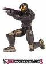
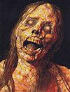

De: La Frikipedia, la enciclopedia extremadamente seria.
De: La Frikipedia, la enciclopedia extremadamente seria. De: La Frikipedia, la enciclopedia extremadamente seria.
Halo: Custom Edition o Halo CE es la vercion multijugador de Halo: El combate ha empeorado donde puedes jugar de solo a 16 mierdadores en nuevos mapas multijugadores como mapas de halo 3 o tu propia casa donde el objetivo sera ser un asesino en serie o un asaltante dependiendo el tipo de juego y tambien cuenta con nuevas armas como un destapakaños para quitarle el casco a tu enemigo y nuevos carros como una camioneta Lobo 2011 y puedes utilisar un chat en el juego para hacer amigos o decirles un millon de groserias a los que te maten, ademas el juego es muy violento por que en cada parte que caminas ay sangre pero apesar de eso el juego es para todas las edades
Halo CE es uno de los muchos juegos de guerra donde el principal objetivo es "matar a todo el que se interponga en el camino y sobrvivir a los jugadores que estan furiosos de todo lo que les dijiste por el chat del juego", es similar a el Halo clasico solo que esta es una vercion multijugador donde podras meterte un vibrador en servers que son las partidas de mierda donde hay una guerra sangrienta para saber quien se queda con el burrito de frijol o puedes crear un server donde esperaras 1 hora para que entre alguien y luego se salga, bueno lo importante es ganar el burrito y no ser un imbecil perdedor.
Tambien podras descargar nuevos mapas y programas que unos gilipollas adictos al juego crearon en una pagina llamada Halomaps y hacer el juego mas divertido, jugando en nuevos mapas con nuevas armas destructivas y coches muy contaminantes y toxicos para la capa de ozono del anillo (si tiene).
Halo CE fue creado por Bill Gates cuando se le acabo la memoria de su computadora y no podia instalar Halo se le ocurrio que si borraba los mapas de campaña pesaria menos y si le caberia los borro pero siempre lo mataban en internet se aburrio y decidio ponerle la campaña pero habia borrado los mapas y decidio subirlos pero le salia un error decidio crackearlo hasta que lo logro y creo nuevos mapas y se los metio, decidio subirlo a internet y se combirtio en el famoso Halo CE
"No fue creado para Xbox por que en ese tiempo pocos tenian xbox life y como era solo para multijugador no lo sacaron, hoy miles de cientificos luchan por lograrlo y revolucionar la xbox negrita ya olvidada"
Verso sacado del libro: Mi cajita XXX y sus juegos
Halo CE cuenta con barios tipos de juegos, porque tubieron muchas demandas de que su juego era altamente adictivo y violento asi que crearon varios tipos de juegos en equipo y asi le quitaron el 50% de violencia del juego y enseñando el trabajo en equipo (para futuros asaltantes aliados).
El juego cuenta con los siguientes tipos de juegos :
Su objetivo es matar como loco a todos sea amigo o enemigo y cuidarte de que no te follen maten o te cojan desprevenido, este tipo de juego es muy divertido sobretodo por la violencia sobre todo cuando le siges disparando a un muerto, estos son los tipos de asesinos:
Esos son todos los asesinos puedes cambiar las armas y coches del mapa por las que quieras
Su objetivo es Todos contra la base enemiga que los n00b se quede cuidando la bandera en este tipo de juego, tienes que ir a la base enemiga, obtener la bandera, cuidarte de que no te metan la bandera por el culo y llegar salvo a tu base y ponerla como trofeo y aser lo mismo otra vez hasta que ganen, estos son los tipos de roba la bandera del enemigo:
Son solo 2?? no hicieron mas??? bueno puedes cambiar configuraciones y hacerlo mas entretenido
Su objetivo es busca los restos de tu abuelo, tomalos y quedatelos todo el tiempo que puedas por que ahi esta su herencia cuidate de tus parientes aqui solo tienes que encontrar y agarrar el craneo de tu abuelo y quedartelo hasta que ganes pero no sera facil todos sus parientes quieren ese craneo y te mataran a pesar de ser familiar,estos son los tipos de el craneo:
busca uno, agarralo y escondete mientras los demas se pelean por los demas craneos, gana el que se quede mas tiempo con un craneo
Estos son todos los tipos de busca el craneo y que no te lo quiten puedes tener hasta 16 abuelos
Su objetivo es la reina de la colina esta bien buena si quieres ser el rey tienes que quedarte en la colina por todo el tiempo que puedas, cuidado todos quieren ser reyes y haran lo que sea por serlo, pero solo uno podra serlo quien sera??? en este Reyna sobre la colina tendras que estar todo el tiempo que puedas en la colina matando a todo enemigo que quiera ser rey pero sera dificil por que nadie resiste esa tentacion, estos son los tipos de reyna sobre la colina:
Estos son los tipos de reyna sobre la colina "¿pero que cosa es eso, la reina se desnuda?? tengo que ganar a como de lugar"
El objetivo es Esos putos gringos ya me cayeron gordos de que escriben y no les entiendo, agarren la bomba nuclear y vamos a dejarla en su base !Siiiiiiii¡ en asaltante, tus enemigos son los gringos comandados por Obama, tendras que habrirte paso por el campo de batalla poner la bomba nuclear en la base de Obama y correr a tu base antes de que explote, el enemigo puede desactivarla, estos son los tipos de juego de Asaltante:
"Asalta la base del enemigo y sobrevive, buena suerte"
Su objetivo es: Conduce a tuda pastilla y esquva al enemigo nada te importa solo el premio, conduce hasta llegar a los puntos de control Si eres fanatico de las carreras este tipo de juego te gustara aqui tendras que agarrar un auto y conducir como loco hasta llegar a los puntos de control, estos son los tipos de juego de Carreras callejeras:
Hasta en Halo hay carreras
En Halo CE puedes ser quien seas un (gringo, austriliano, un presidente) pero eso depende de los creadores del mapa ellos ponen como se vera el jugador (horrible) y como seran (brutos, inbeciles o listos) estos son algunos de los personajes con los que puedes jugar Halo CE:
| Imagen | Nombre | Descripción | Fatality |
|---|---|---|---|
| Spartan blanco | Es un spartan color blanco que lo suelen usar los n00b que no saben jugar, aunque amenudo es usado por expertos, este spartan se le reconose por ser habil jugando halo 3 y tiene un poder debastador | Grafitear con corrector el casco del enemigo dejandolo momentaneamente siego y darle una patada giratoria que le haga dar 3 vueltas de 360º | |
| Spartan dorado | Usado por expertos de Halo, Spartan dorado es el mejor spartan de multijugador con un super poder y debastador fatality, con el problema de que es muy lento y grande | Aumentar su velocidad y activar el truco super puñetasos, echarse un mega gas y ensender un cerillo (si no mueren por intoxicacion, moriran por la super explocion) | |
| Spartan azul | Spartan azul es un jugador habil en mapas grandes, amenudo usado por expertos y en partidas de equipos es un spartan que sufre un problema de acne y nunca se a quitado el casco (ni para dormir) | Lanzar 10 granadas por seguno al enemigo por 10 segundos, eructo explocivo y propulcion a gases (puede hacer una combinacion con el eructo y los gases) | |
|  | Spartan lila | Spartan lila es una spartan usada por mujeres (obio) que es habil en las tacticas y juegos de equipos, con el poder femenil es casi inbencible el problema es su debil fatality | Escabar un tunel bajo tierra donde pone minas explosibas y salir en la base enemiga |
| Spartan negro | Usado por los africanos y cubanos(y jugadores del GTA SA), spartan negro es el mayor enemigo de spartan negro y es reconocido por ser el mejor jugador de GTA San Andres y por tener un gran poder y un gran fatality | Lanzarle al enemigo un bote de pintura negra y darle una patada en los cojones | |
| Spartan morado | Usado principalmente por emos, spartan morado es un tio extremadamente serio que solo sabe hacerse pajas cada segundo con poco poder y un vergonsoso fatality spartan morado es el peor spartan del juego | Hacerse una paja frente el enemigo y arrojar sangre de sus venas | |
| Mario | Usado por fanaticos de Noentiendo, Mario es un personaje con poderes tipicos y debiles comparados con los spartans, es debil pero puede comer una saeta alucinojeno y drogas que lo agan poderoso | Usar un lanzallamas especial que lanza bolas de | |
| Spartan rojo | Usado por los expertos y en partidas de equipo, spartan rojo es el mayor enemigo del spartan azul siempre luchan por todo (eso incluye quien conquista el mundo primero) con un gran poder y fatality extremo | Saca 10 basucas y dispara a lo loco hasta suicidarse | |
| Spartan verde | Usado por politicos, spartan verde es la copia varata del Jefe Maestro y con el mismo poder es capas de vencer al spartan dorado y sueña en |
Lee en voz alta un informe de gobierno dejando sordo a todos los enemigos y comete fraudes | |
 |
Jefa maestra | Usada por chicas frikis, Jefa maestra es la contraparte del Jefe Maestro y equipada con puras armas mortales es fatal contra todos los espartans y elites del juego con un gran poder podra matarte de una bofetada | Seducirte desnudandose y cuando estes alelado sacara todas tus armas y te matara desintegrandote |
| Inquisidor | Usado por inquisidores, el inquisidor es el |
Mata a todos los herejes del juego con una espada de vidrio y destruye la herejia del mundo | |
| Marine | Usado por soldados, el marine es un soldado comun que solo va a la guerra por que lo amenazaron con quitarle su |
Puede usar dos armas y se vuelve Hulk | |
| Bruto | Usado por brutos e idiotas, los brutes son una raza debil en halo y tambien son brutos e idiotas y no sirven para nada, no devieron existir | Se vuelve loco y se hace mas bruto que nunca | |
| Alienigenas de elite | Usado por aliens, los elites son parecidos a los spartans, solo que ellos tienen super jump y mucha agilida, pero sus escudos no duran nada y mueren facilmente | Grita dejandote sordo y saca una espada de vidreo fosforesente y aumenta su velocidad y agilidad | |
| Enanos con problemas de acne | Usado por gilipollas, los grunts son la especie mas miedosa de halo: CE y lo unico que saben es arrojar mierda verde (plasma) y azul (granadas), y correr | Arroja 4 mierdas azules y super mierda verde | |
| Cazadores cazados | Usado por cazadores, los hunters son la especie mas fuerte y pesada de halo: CE y ademas traen integrado lanzador de mierda verde explociva y tienen super fuerza | Sacan otro lanza mierda verde explociva y activan el truco super puñetasos | |
| Rock-ckal | Usado por rockanroleros, los jackales son aliens con el pelo parado, mucho vello facial y una guitarra alienigena que usa como escudo, es enemigo y a la vez aliado de los grunts | Super guitarrazo y super mierda verde sobrecargada | |
|  | The floods | Usado por los zombies, los floods son una mierda viviente que se meten a cualquier forma de vida estupida (Humanos,Covenants) y los combierten en zombies con latigo integrado y activan el super jump, ademas manejan cualquier tipo de arma o vehiculo | Posecion |
| Moscas evolucionadas | Usado por los bichos, los drones son moscas evolucionadas con capacidad de volar 1 kilometro sobre el nivel del mar, esquivar todo lo que le lanzan y sobrevivir a cualquier insectisida, solo un matamoscas o un buen tiro puede eliminarlo | Lanzar aguijones morados y mierda verde |
En Halo hay muchas prostitutas armas nuevas de mierda que han creado los fanaticos de halo
que van desde armas de toda la saga de halo, hasta la saga de mario (eso incluye el maso) y unas armas del futuro que con un disparo te desintegran o sales volando hasta el universo donde chocaras con un OVNI o cometa, aunque tambien estan las basicas, todas estas armas se dividen en tres grupos:
Estas armas son todas las fabricadas por el ser humano y perfeccionadas por sus cientificos y son creadas especialmente para combatir al parto, zombis y a Barney las armas incluidas en este grupo son las que tienen estas 3 caracteristicas:

Estas son las armas fabricadas por los culos del parto que, por lo general lanzan mierda de colores, o gases toxicos, segun estan hechas para combatir a los humanos pero se a descubierto que el parto aun no inbenta el WC y no sabian que hacer con su mierda, estan hechas de plastico con foquitos de colores, las armas de este grupo tienen estas 3 caracteristicas:
Estas armas son creadas por creadores que son super destructivas (toda una amenaza) son muy grandes y por lo general estan escondidas, un disparo de una de estas armas y lo unico que ves es una gran explocion y miles de masterchiefs volando muertos y todos los vehiculos volando, las armas de este grupo tienen 3 caracteristicas
En Halo existen "grupos especiales de jugadores" llamados Clanes que se dedican a extorcionar reclutar jugadores para hacer crecer su poder y territorio en Halo, su principal objetivo es ""Dominar el anillo y eliminar clanes enemigos"" aunque ay muchas alianzas de clanes, los clanes tienen paginas donde solo pueden entrar los miembros y ahi estan sus archivos secretos, pero sabemos que ninguno lo lograra dominar halo, o si lo logra quedara traumado de tanto estar en la computadora.
Los servers son los juegos donde te puedes meter a jugar, por lo general luego luego entrando te dan un esnipazo y mueres luego puedes tomar venganza, hay como unos 100000 servers abiertos ahora mismo y en 100 hay maricones tios con trucos baratos de mierda que se pasan matandote sin piedad o disparando con una Arma destrucva a lo loco, ten cuidado que donde te metes
Es una pagina donde venden mercancia ilegal a los fanaticos de halo que se a hecho popular por sus videos porno mapas de halo y archivos que modifican el juego para que sea mas facil,
sus seguidores crean mapas a cada minuto, las 24 hrs del dia, los 7 dias de la semana, los 12 meses del año y aveces traen virus, porno o narco y solo los listillos lo descargan y se gastan toda su memoria en la pagina
Autor(es):